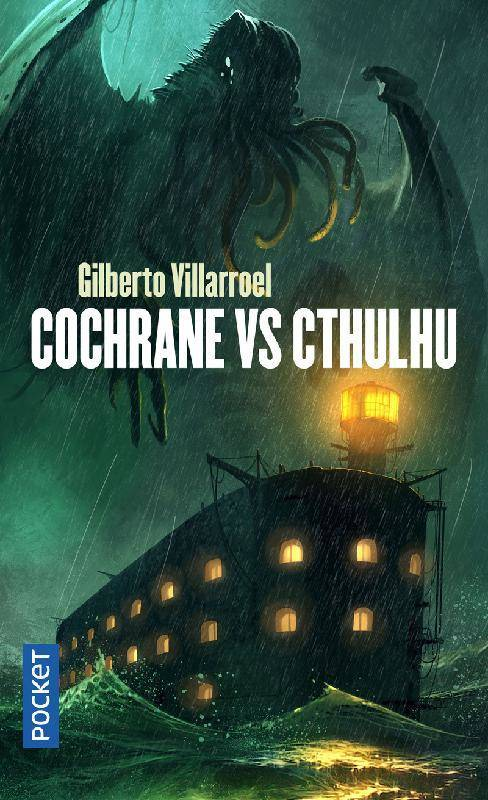
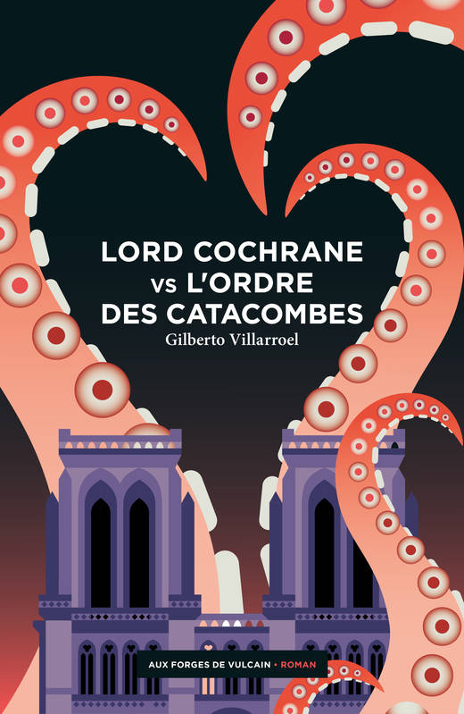
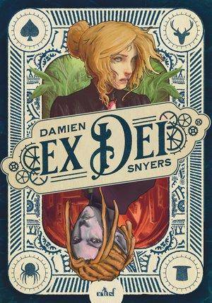
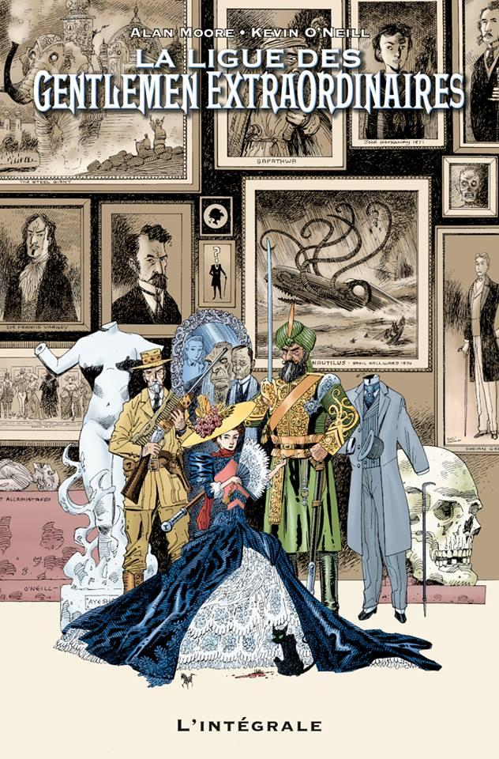

Cochrane vs Cthulhu
de Gilberto Villarroel
En 1815, Napoléon achève la construction de Fort Boyard et Lord Cochrane revient dans la baie pour détruire ce bastion. Mais il se trouve confronté à une menace surnaturelle, Cthulhu, un dieu endormi qui émerge alors du fond des océans pour revendiquer le contrôle de la Terre !
Lord Cochrane vs L’ordre des Catacombes
de Gilberto Villarroel
Jean-Baptiste Dallier, un bonapartiste ami des frères Champollion, est assassiné dans les catacombes. Le célèbre héros écossais Lord Cochrane arrive alors à Paris. Il y retrouve Champollion le Jeune qui possède les preuves de l'existence de Cthulhu, un monstre antédiluvien.
Ex Dei
de Damien SNYERS
Dans un monde où se mêlent machines à vapeur, magie et trolls, une humaine et un elfe tentent de sauver leur peau. Elle, membre d’une organisation secrète en possession d’un artefact convoité, lui, gentleman cambrioleur aux yeux plus gros que le ventre. Mais que peut-on faire face à un homme qui ne veut pas mourir ?
 